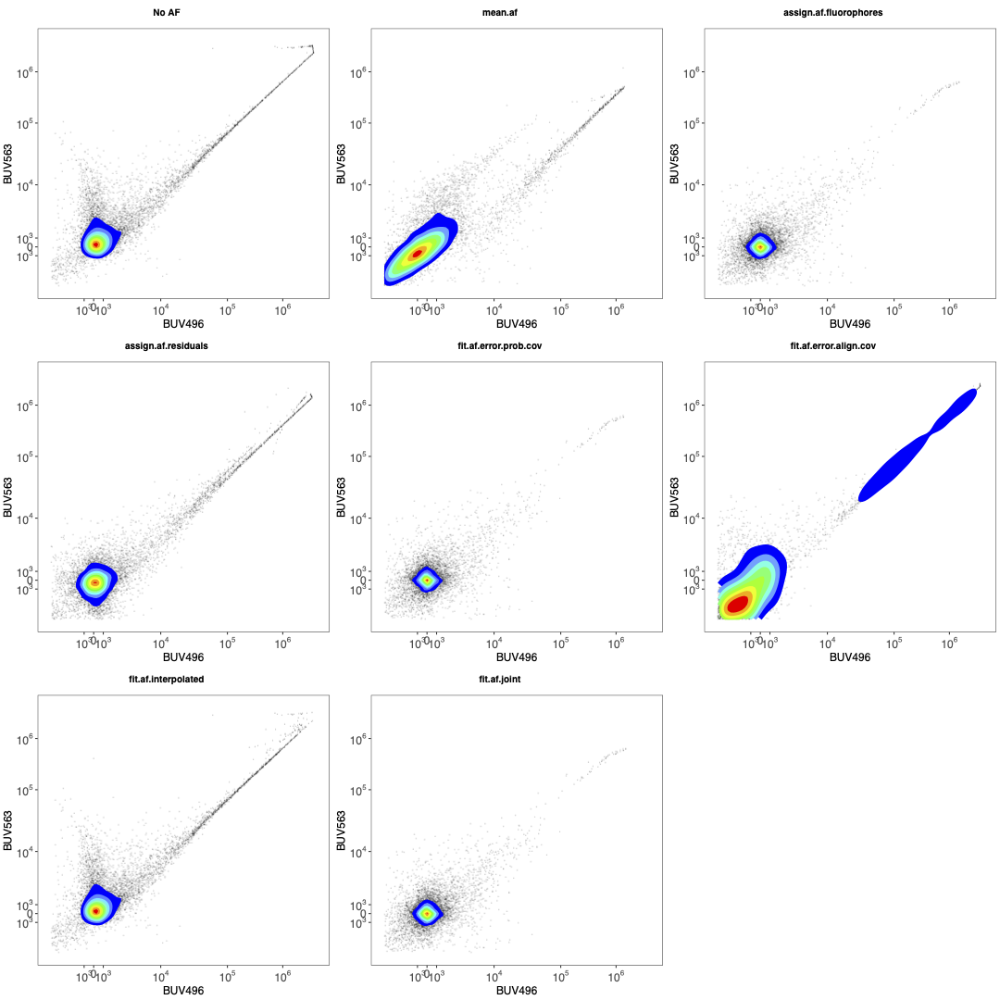
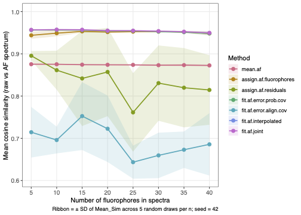
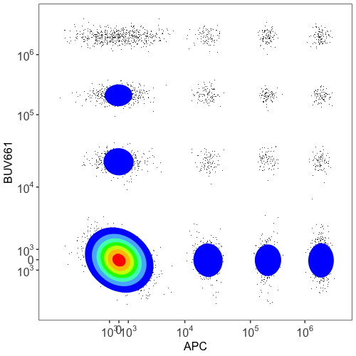

Installation
Developments can be deployed and tested in dev branch.
To install the dev branch:
devtools::install_github("DrCytometer/AutoSpectral@dev")To replace this with the (hopefully) stable version, run this:
remove.packages("AutoSpectral")
devtools::install_github("DrCytometer/AutoSpectral")In progress
Here’s some stuff that’s in progress. These changes will show up
first in the development dev branch, which you are welcome
to install and test.
If you would like to contribute to AutoSpectral, these are key areas I have identified where it has shortcomings or needs improvement. Suggestions for strategies, or better, code suggestions, would be appreciated.
Unmixing with controls from different days or different voltages
AutoSpectral does not currently explicitly support this, although it may work reasonably well anyway since these modern spectral cytometers are fairly well calibrated for PMT/APD linearity.
In most cases, AutoSpectral does not have access to the information needed to normalize the files between different voltage settings. For Cytek instruments, this would be QC information and the initial linearity response curve for the APDs. For FACSDiscover systems, this is likely the QSPE values, which are in the FCS files.
I’d need to sit down and work out the normalization functions. This hasn’t been a top priority.
More flexibility in negative/unstained samples.
Allow multiple controls per fluorophore.
-
Fix the issue causing discontinuities.
- This is now fixed in Version 1.6.0 if you call the “joint” pipeline when unmixing. This uses a variance-covariance matrix plus residual alignment to determine optimal per-cell fluorophore spectra, without the requirement to use the TRU-OLS trick of dropping into a “positive-fluorophore only” unmixed space. That trick is faster and highly effective, since it gives us much more information about the shape of the residual, but inevitably surfaces optimization artefacts around the positivity threshold.
-
Better correction of unmixing errors
- There are several strategies I’m investigating to handling the cases where the multi-color samples contain obvious errors outside the range of variation seen in the single-color controls. Some thoughts on this can be seen in Correcting Unmixing Errors
- This should be improved further with the next round of updates, tentatively 1.6.0
Autofluorescence modeling +infer more precise AF spectra through geometric mapping to multiple points on the SOM. I tried this using weighted averages of how much each AF “helped” or “fit” the cell, but the result was worse. Probably I did something wrong because conceptually this make sense to me.
Faster AF assignment through machine learning
Run a representative or pooled sample, figure out which AF spectrum belongs to each cell, train a model, use the model for lightweight (quick) approximation of the best spectrum for remaining samples. This is how I anticipate AutoSpectral could be employed on cell sorters. That said, the Honeychrome implementation in Python uses either a 3D matrix multiplication via NumPy or a C kernel and is quite fast, so this may not be necessary.
Understanding Per-Cell Unmixing in AutoSpectral
This section provides an overview of the mathematical and biological ideas underpinning the per-cell unmixing approaches in AutoSpectral, aimed at readers with backgrounds ranging from wet-lab cytometry through to computational biology. The two main components are per-cell autofluorescence (AF) assignment and per-cell fluorophore spectral variant selection. Both solve the same fundamental problem—choosing the best spectral model for an individual cell—but they differ in what varies and why.
The core problem: one model, many cells
Standard spectral unmixing applies a fixed linear model to every cell in a sample. Each fluorophore is represented by a single spectral signature (a normalised vector of detector intensities), and the observed raw detector signal for any cell is assumed to be a non-negative weighted sum of those signatures plus autofluorescence. In matrix form, if X is the (cells × detectors) raw data matrix and S is the (fluorophores × detectors) spectral matrix, the unmixed fluorophore abundances U are estimated by ordinary least squares (OLS):
\[\hat{\mathbf{U}} = \mathbf{X} \mathbf{S}^\top (\mathbf{S}\mathbf{S}^\top)^{-1}\]
The problem is that neither the fluorophores nor the autofluorescence are perfectly fixed quantities. Tandem dyes degrade at varying rates; conjugation efficiency probably varies within a batch; cells from different tissues carry spectrally distinct populations of autofluorescent molecules. When any of these deviate from the fixed spectral assumption, the residuals—the part of the raw signal the model cannot explain—are non-random. They are correlated with whatever is misspecified. AutoSpectral addresses this by replacing the single fixed spectrum, for both AF and fluorophores, with a library of closely related variants, and selecting the best variant for each cell.
Autofluorescence Assignment Methods
Autofluorescence is typically the most pressing source of per-cell
model misspecification, particularly in complex tissue samples. Lung
macrophages, hepatocytes, eosinophils and neurons each carry a distinct
mixture of endogenous fluorescent molecules—NAD(P)H, flavins,
porphyrins, lipofuscin—with different excitation/emission properties.
When cells from different tissue compartments or different physiological
states are present in the same sample, no single AF spectrum adequately
describes all of them. AutoSpectral’s get.af.spectra()
function addresses this by training a SOM on the unstained control and
treating each SOM node centroid as a candidate AF spectrum. The result
is a library of up to 100 (default 10×10 SOM) variants covering the
breadth of AF variation present in the sample.
The remaining challenge is to decide, for each cell in the fully
stained sample, which of these variants is the most appropriate.
AutoSpectral provides several strategies for this assignment step, each
with different assumptions and failure modes. The function
benchmark.af.spectra() (described later in this article) is
the recommended way to compare them on your own data.
Why collinearity is key, and why the residual is not the AF
Before comparing the assignment strategies, let’s clarify what AF actually does to unmixing.
The key insight is that only the component of AF that is collinear with the fluorophore spectral space propagates into the unmixed values. To see why, consider the OLS solution. If the true raw signal for a cell is \(\mathbf{x}_i = \mathbf{u}_i \mathbf{S} + \alpha_i \mathbf{a} + \pmb{\varepsilon}_i\), where \(\alpha_i \mathbf{a}\) is the cell’s AF contribution, then OLS unmixing without an AF row in S will absorb the projection of \(\alpha_i \mathbf{a}\) onto the fluorophore subspace into \(\hat{\mathbf{u}}_i\), and leave only the component orthogonal to that subspace in the residual. The orthogonal component of \(\mathbf{a}\), the part that is genuinely distinct from all fluorophore spectra, does not affect the unmixed fluorophore values at all, because OLS cannot represent it as a linear combination of the rows of S. It simply sits in the residual. AF that is perfectly orthogonal to the fluorophore subspace is therefore harmless from an unmixing perspective: it creates an elevated residual norm, but it does not bias any fluorophore channel. In contrast, AF signal that lies in the fluorophore subspace, i.e., that can be expressed as a weighted sum of fluorophore spectra, is indistinguishable from real fluorophore signal and will be assigned to whichever fluorophore channel(s) it most resembles.
This has an important practical consequence: unmixing the OLS residual per-cell as if it were AF, then trying to correct the unmixed values accordingly, does nothing mathematically. The residual by construction is orthogonal to the column space of S. Adding any multiple of the residual back to the raw data and re-unmixing produces exactly the same \(\hat{\mathbf{u}}_i\), because OLS projects out the orthogonal component before computing the coefficients. The only AF signal that can be recovered this way is the part that was never affecting unmixing in the first place. To correct for AF contamination of the fluorophore channels you must either include an AF spectrum (or basis) directly in S so the unmixing can explicitly account for it, or subtract a scaled AF spectrum from the raw data before unmixing— both of which require knowing which AF spectrum to use, hence the assignment problem.
From a biologist’s perspective
Think of the different AF assignment strategies as different ways of answering the question: “given everything I can see about this cell, what kind of autofluorescence is it likely to have?”
The simplest possible answer is “the average”—every cell gets assigned the mean AF spectrum. This is the baseline, and the question is always how much better we can do.
Beyond that, each strategy uses a different piece of information:
- Residual alignment looks at what is “left over” after a preliminary unmix without AF. If a lot of signal remains in the channels where a particular AF variant is bright, that variant is probably a good match for this cell.
- Fluorophore spillover minimisation takes the opposite angle: it asks which AF variant, when subtracted from the raw signal, leaves the smallest apparent fluorophore signal in channels that should be empty. This is motivated by the fact that if you pick the wrong AF spectrum, the residual AF signal gets absorbed into the fluorophore channels it most resembles, creating false positive or elevated readings. This is obviously correct for an unstained sample, where we have no fluorophore signals. For stained samples, this metric is correct because we are using fixed AF profiles, not free-ranging, so the AF can only propagate through the unmixing matrix according to the variance-covariance matrix. That is, any sum of signals that can be reduced by the AF through the unmixing matrix is plausible.
- Joint covariance-residual scoring combines both signals: it rewards variants that reduce both the raw residual and the fluorophore spillover, and it weights fluorophore channels by how much AF variation actually propagates into them.
- Component-based AF removal (PCA/SVD) characterises the AF subspace from the unstained control using principal components rather than a single spectrum, and projects that subspace out of the single-colour control data before the fluorophore spectrum is fitted. This is used during spectrum extraction rather than per-cell assignment. An extension matches the projected AF contribution to the SOM library by cosine similarity, avoiding the spread that can arise from directly unmixing components that are collinear with fluorophore signals.
- Scatter-matched assignment is based on the biological intuition that cells of similar size and granularity—similar FSC and SSC—probably have similar autofluorescence. It finds the nearest neighbours of each test cell in scatter space from a reference unstained sample, averages their spectral signals, and uses that average as the cell’s expected AF.
From a mathematical perspective
All of the assignment approaches can be understood as approximate
solutions to a selection problem with the following structure. Let \(\mathbf{x}_i\) be the raw detector signal
for cell \(i\) (a row of
X), and let \(\mathbf{a}_1,
\ldots, \mathbf{a}_K\) be the \(K\) candidate AF spectra (rows of
af.spectra). The AF index \(j^*\) we want is:
\[j^* = \underset{j}{\arg\min} \; \mathcal{L}(\mathbf{x}_i, j)\]
where \(\mathcal{L}\) is some loss function. The methods differ in their choice of \(\mathcal{L}\).
Residual alignment
(assign.af.residuals) computes a preliminary OLS
unmix of \(\mathbf{x}_i\) using only
the fluorophore matrix S (no AF row), obtaining \(\hat{\mathbf{u}}_i = \mathbf{x}_i \mathbf{S}^\top
(\mathbf{S}\mathbf{S}^\top)^{-1}\). The residual is \(\mathbf{r}_i = \mathbf{x}_i - \hat{\mathbf{u}}_i
\mathbf{S}\). Each AF variant is scored by the dot product \(\mathbf{r}_i \cdot \mathbf{a}_j\), i.e. the
projection of the residual onto that variant’s spectral direction. This
is equivalent to asking which variant best accounts for the unexplained
signal, and maximising the dot product is equivalent to minimising the
L2 residual after subtracting that variant. The computation is very fast
(a single matrix multiply after the initial OLS), but the residual is
meaningful only if the preliminary unmix without AF is reasonable—it is
not when the AF spectrum overlaps heavily with the fluorophore space,
because then the unmixing absorbs AF signal into the fluorophore
channels before the residual is even computed. In other words, residual
alignment works well when the panel is small and the AF has distinctive
spectral features that are poorly explained by the fluorophores, but
degrades in large panels where the AF is largely spanned by the
fluorophore basis.
Fluorophore spillover minimisation
(assign.af.fluorophores) works in the opposite
direction. For each candidate AF variant \(j\), it estimates the scalar AF intensity
for cell \(i\) by projecting the cell’s
raw signal onto the component of \(\mathbf{a}_j\) that is orthogonal to the
fluorophore subspace. Specifically, the orthogonal complement of \(\mathbf{a}_j\) in the fluorophore subspace
is
\[\mathbf{r}_j = \mathbf{a}_j - \mathbf{S}^\top (\mathbf{S}\mathbf{S}^\top)^{-1} \mathbf{S} \mathbf{a}_j\]
and the estimated AF scalar is \(k_{ij} = (\mathbf{x}_i \cdot \mathbf{r}_j) / \|\mathbf{r}_j\|^2\). After subtracting \(k_{ij} \mathbf{a}_j\) from the raw signal, the residual is re-unmixed and the fluorophore channels are summed in absolute value (L1 norm) to give the loss. The idea is that subtracting the correct AF variant should bring apparent fluorophore signals in “empty” channels close to zero. This approach uses only the component of AF that the fluorophore matrix cannot explain to estimate AF intensity, which means it is blind to AF signal that is collinear with the fluorophores—the very situation where it matters most. As panel size grows and the fluorophore basis more completely spans the spectral space, the orthogonal residual \(\mathbf{r}_j\) shrinks, and the method’s AF intensity estimates become unreliable. The fluorophore spillover cost, however, remains informative because it sees the net effect on the downstream unmixed values. This method therefore tends to complement residual alignment: it is more reliable in larger panels and degrades gracefully in smaller ones.
Joint covariance-residual scoring
(assign.af.joint.cov) aims to combine the
strengths of both. The covariance matrix of the AF library \(\Sigma_{\rm AF}\) is propagated into
fluorophore space via the unmixing matrix U:
\[\Sigma_F = \mathbf{U} \Sigma_{\rm AF} \mathbf{U}^\top\]
The diagonal of \(\Sigma_F\) gives the per-fluorophore-channel variance induced by AF spectral variation. Taking its square root yields a weight vector \(\mathbf{w}\) that is large for fluorophore channels where different AF variants have very different effects and small for channels where the variants look alike. These weights modulate the L1 fluorophore error:
\[e^{\rm fluor}_{ij} = \sum_f w_f \left| [\hat{\mathbf{u}}_i - k_{ij} \mathbf{v}_j]_f \right|\]
where \(\mathbf{v}_j = \mathbf{U} \mathbf{a}_j\) is the fluorophore-space projection of variant \(j\). The residual-space error is computed separately as the L2 norm of the adjusted raw-space residual. The two proportional errors (each expressed relative to the no-AF baseline) are multiplied together:
\[\mathcal{L}_{ij} = \frac{e^{\rm fluor}_{ij}}{e^{\rm fluor}_{i, \rm base}} \times \frac{e^{\rm resid}_{ij}}{e^{\rm resid}_{i, \rm base}}\]
Multiplying rather than adding the two terms means that a variant
must reduce both the fluorophore spillover and the raw-space
residual in order to score well—large improvements on one axis cannot
fully compensate for poor performance on the other. The covariance
weighting focuses the fluorophore term on channels where the AF library
is most problematic, which is precisely where the choice of variant
matters most. This approach is theoretically sound across a wider range
of panel sizes, but it is also more expensive to compute. It is
currently the default in benchmark.af.spectra() alongside
the simpler methods.
Component-based AF removal via principal components is a qualitatively different approach that doesn’t address the collinearity problem. While I have explored this approach for per-cell AF extraction, it is not consistently effective due to the potential for AF components to be collinear with fluorophore signatures. Rather than selecting a single AF spectrum from a library and subtracting it, this method characterises the AF subspace from the unstained control using a (truncated) SVD, then projects that subspace out of data before fitting the fluorophore spectrum. I’ve typically found the top four components (right singular vectors) to be enough.
This approach is used in the identification of fluorophore variation
in get.spectra.variants(), excluding the influence of AF.
For cell-based single-colour controls, the positive events are unmixed
against the combined matrix
rbind(af.pcs, original.spectrum), yielding per-cell weights
for both the AF principal components and the fluorophore itself. The
weighted contribution of the AF components is then back-projected into
detector space and subtracted, producing AF-decontaminated events from
which the optimised fluorophore spectra are derived. The
get.spectra.automated() function only uses a single AF
vector to achieve a similar result, which is safer since we do not know
the fluorophore vector at this point.
The advantage of the component (deconvolution) method is that the AF subspace basis is data-driven and multi-dimensional: it can represent structured AF variation (e.g., multiple cell populations with different AF profiles) without requiring the user to specify the number or shape of AF components explicitly. The limitation is that this approach can drive unmixing-dependent spread in the same way standard multiple AF extraction does. So, it is used during spectrum extraction in the controls, not during per-cell assignment in the fully stained sample—it refines what goes into the spectral library, rather than selecting a per-cell AF variant at unmixing time.
An extension under development addresses this limitation. After back-projecting the AF principal components for each positive cell, the projected vector can be compared against the SOM-derived AF library by cosine similarity, and the closest library variant can be flagged as that cell’s likely AF type. This sidesteps the spread introduced by directly unmixing collinear components: instead of estimating AF abundance from a potentially ill-conditioned solve, the projection is used only to navigate to the nearest spectral variant, and then the standard library-based assignment and subtraction pipeline takes over. This combination is most effective in small panels where the AF components are not heavily collinear with the fluorophore spectra, and becomes progressively less reliable as panel dimensionality grows because the unmixing spread noise conflates the estimates of the true AF signal.
Scatter-matched assignment
(assign.af.scatter.match) is implemented as an
experimental benchmarking alternative rather than a production method.
For each test cell, the \(k\) nearest
neighbours in the reference unstained sample are located in scatter
space (FSC, SSC) using the FNN library, and their spectral
channels are averaged to produce a cell-specific AF estimate. If
af.spectra is provided, the closest library variant to this
scatter-matched average is returned as the assignment. The idea here is
that cells of similar size and granularity should have similar
endogenous fluorophore content, but the method requires a well-matched
unstained reference acquired in the same run, is sensitive to scatter
normalisation, and does not generalise to the case where AF variation is
driven by factors other than size (e.g., metabolic state or activation).
So, it won’t be perfect for rare cell type with similar scatter profiles
to a much more numerous type (e.g., basophils and lymphocytes).
Method summary
| Method | Key information used | Strength | Weakness |
|---|---|---|---|
assign.af.residuals |
Raw-space unexplained signal | Fast; works well for small panels with distinctive AF | Residual is confounded when AF overlaps with fluorophore space |
assign.af.fluorophores |
Fluorophore spillover after AF subtraction | Robust in large panels | Blind to collinear AF; AF intensity estimate degrades when orthogonal residual is small |
assign.af.joint.cov |
Both, covariance-weighted | Broadly robust; discriminative weights | More expensive; requires good SOM coverage |
| Component-based (SVD/PCA) | Data-driven AF subspace from unstained SVD | Multi-dimensional; no need to pre-specify AF shape; used in spectrum extraction | Applied at control-fitting stage, not per-cell assignment; collinearity risk in large panels; projection-to-SOM-library variant still experimental |
assign.af.scatter.match |
Scatter-matched unstained neighbours | Biologically motivated | Requires matched unstained reference; sensitive to scatter normalisation |
For a somewhat uncertain discussion of the consequences of choosing the wrong spectrum on unmixing accuracy—framed in terms of covariance propagation—see this post on the Colibri Cytometry blog.
Comparing and benchmarking AF methods
If you are developing a new AF assignment function or simply want to
compare the existing strategies on your own data, AutoSpectral provides
three functions: compare.af(),
test.af.accuracy(), and
benchmark.af.spectra.size().
compare.af() evaluates multiple sets of
AF spectra—for instance, candidates produced by
get.af.spectra() with different som.dim values
or refine settings—against a single unstained FCS file,
using a fixed assignment function. For each candidate it computes
per-cell cosine similarity between the raw detector signal and the
assigned AF spectrum. A common mean-AF baseline (every cell assigned to
the mean of the first candidate) is included as a reference point. The
result is a bar chart saved to plot.dir and a named list of
similarity statistics.
# compare two different AF extractions (e.g. with and without refinement)
af_v1 <- get.af.spectra( unstained.fcs, asp, spectra, refine = FALSE )
af_v2 <- get.af.spectra( unstained.fcs, asp, spectra, refine = TRUE )
cmp <- compare.af(
unstained.fcs = unstained.fcs,
spectra = spectra,
af.spectra.list = list( no_refine = af_v1, refined = af_v2 ),
assign.fn = "assign.af.joint.cov",
n.downsample = 2000,
plot.dir = "figures/af_compare"
)
# mean cosine similarity for each candidate
sapply( cmp[ c("no_refine","refined") ], `[[`, "Mean_Sim" )test.af.accuracy() evaluates one or
more assignment functions against a fixed set of AF spectra on
a single unstained file. Use this first when developing a new method, to
confirm it works and to benchmark it against the existing
approaches.
Your function must follow one of two calling conventions.
Assign-type functions take
(raw.data, spectra, af.spectra) and return an integer
vector of per-cell AF-spectrum indices (one index per row of
raw.data, values in 1:nrow(af.spectra)).
my.assign.af <- function( raw.data, spectra, af.spectra ) {
# raw.data : matrix, cells x detectors
# spectra : matrix, fluorophores x detectors (no AF row)
# af.spectra : matrix, AF variants x detectors
# ... your logic here ...
af.idx # integer vector, length nrow(raw.data), values in 1:nrow(af.spectra)
}Fit-type functions (name must start with
"fit.") receive pre-computed OLS quantities and return both
the assignments and the unmixed fluorophore values. They are called with
(raw.data, unmixed, unmixing.matrix, spectra, af.spectra)
and must return a list with elements $unmixed (cells ×
fluorophores matrix, no AF column) and $af.idx (integer
vector as above).
fit.my.af <- function( raw.data, unmixed, unmixing.matrix, spectra, af.spectra ) {
# unmixed : matrix, cells x fluorophores (OLS result without AF)
# unmixing.matrix : matrix, fluorophores x detectors
# ... your logic here ...
list(
unmixed = unmixed_with_af_corrected, # cells x fluorophores, no AF column
af.idx = af.idx # integer vector
)
}The naming convention matters: test.af.accuracy()
dispatches on whether the function name starts with "fit.",
so make sure your function is named accordingly and is available in the
current search path (loaded via devtools::load_all() or
source()).
results <- test.af.accuracy(
unstained.fcs = "path/to/unstained.fcs",
spectra = my.spectra, # fluorophores x detectors
af.spectra = my.af.spectra, # AF variants x detectors
asp = my.asp,
functions = c(
"assign.af.fluorophores", # existing method - keep as a reference point
"assign.af.residuals", # existing method
"my.assign.af" # your new function
),
n.downsample = 1000, # events per run; increase for a final check
plot.dir = "figures/af_dev"
)
# mean cosine similarity for each method (higher is better)
sapply( results, `[[`, "Mean_Sim" )
# per-cell similarities for your method
hist( results[["my.assign.af"]]$Similarity, breaks = 50,
main = "Per-cell cosine similarity", xlab = "Cosine similarity" )
AF Accuracy
benchmark.af.spectra() is the
panel-size sensitivity test. Once your function looks promising on a
single file, use this to check whether it holds up as the panel grows.
It repeatedly subsamples the spectra matrix to a range of panel sizes
and runs test.af.accuracy() for each subsample, producing a
summary line plot of mean cosine similarity vs. fluorophore count. A
well-behaved method should sit above the mean-AF baseline across all
panel sizes. Methods that degrade steeply with panel size are likely
being confounded by collinearity between the AF library and the
expanding fluorophore basis.
bench <- benchmark.af.spectra(
unstained.fcs = "path/to/unstained.fcs",
spectra = my.spectra,
af.spectra = my.af.spectra,
asp = my.asp,
functions = c(
"assign.af.fluorophores",
"assign.af.residuals",
"my.assign.af"
),
n.fluors = c( 5, 10, 20, 30, 40 ), # panel sizes to test
n.draws = 5, # random draws per panel size
n.downsample = 1000,
plot.dir = "figures/af_dev"
)
# the summary data frame: mean and SD of cosine similarity across draws
head( bench$summary )
# the ggplot object, if you want to tweak the figure
bench$plot + ggplot2::ggtitle( "My new AF method" )The output plot shows one line per method with a ribbon spanning ±1
SD across random draws. You should expect
assign.af.residuals to perform well at small panel sizes
and degrade relative to assign.af.fluorophores as the panel
grows; assign.af.joint.cov should be competitive at all
sizes. If you have results you’d like to share, feel free to open an
issue or pull request on GitHub with the summary data frame and the
benchmark plot.

AF Benchmarking
Synthetic Data for Development and Testing
sim.flow.data() generates synthetic spectral flow
cytometry data for testing unmixing ideas and benchmarking AF assignment
methods. The function takes a spectral matrix and an asp
parameter list (for some cytometer-specific aspects), then builds a
detector-space signal matrix that includes my attempt to simulate the
noise sources present in instruments.
The main advantage of using this synthetic data is that you get a
“ground truth” of the actual abundances for the fluorophore signals in
the absence of any confounding noise. You can also turn on and off
specific noise sources. That said, I haven’t used this much and tend to
rely on biology and cytometry knowledge to evaluate unmixing, basically
going on my opinion. I have also modelled this after my understanding of
flow and the aspects I’ve worked out in AutoSpectral, so it
will contain those biases implicitly.
The simulation proceeds in three steps. First, each cell is assigned
a random subset of fluorophores (controlled by complexity),
and per-cell abundances are drawn from a log-normal distribution
parameterised by three discrete expression layers
(layer.centroids). Second, if af.spectra and
variants are supplied, per-cell AF spectra and
per-fluorophore spectral variants are sampled and mixed into the signal,
enabling ground-truth evaluation of assignment accuracy. Third, the
clean mixed signal is corrupted by binomial spillover sampling, Poisson
shot noise, and additive Gaussian readout noise according to a
cytometer-specific detector preset drawn from
asp$cytometer; presets are included for Aurora, ID7000,
FACSDiscover S8/A8, Opteon, Mosaic, Xenith, and Symphony.
The function returns a list with four elements:
-
$raw— the detector-space matrix, ready to pass to any unmixing function. -
$unmixed.no.af— an OLS unmix of$rawagainstspectrawith no AF term, useful for a quick sanity check. -
$truth— ground-truth abundances, expression layer assignments, variant indices, AF row assignments, AF abundances, and scatter values. -
$params— the full set of simulation settings, for reproducibility.
How to use it:
asp <- get.autospectral.param("Aurora")
spectra <- get.fluorophore.spectra(panel, asp)
unstained.fcs <- "./path/to/my.fcs"
af.spectra <- get.af.spectra(unstained.fcs, asp, spectra)
sim <- sim.flow.data(
spectra = spectra,
asp = asp,
n.cells = 20000,
af.spectra = af.spectra
)
# Ground-truth vs assigned AF abundance
plot(sim$truth$af.abundance, sim$unmixed.no.af[, "AF"])
create.biplot(
sim$unmixed.no.af,
"APC", "BUV661", # your fluorophores
x.min = -10000, # adjust axes if needed
asp,
save = FALSE
)Scatter can be replaced with real FSC/SSC data from an experiment
(via scatter.data) to produce a synthetic population with
realistic morphological distribution. The seed argument
ensures reproducibility. The benchmark.af.spectra()
function accepts simulate.flow.data() output directly: pass
sim$raw as the data matrix and sim$truth for
accuracy evaluation.
By default, you get a negative population and three nicely spaced positive populations, for a grid of 16 in a biplot. Here’s an example without any AF or fluorophore variation thrown in.

Synthetic Data
Understanding Per-Cell Fluorophore Spectral Variant Selection
From a biologist’s perspective
Think of a tandem dye such as BUV661 as a molecular relay: a UV-excited donor (BUV395) passes energy to a red-emitting acceptor (something like Cy5). The efficiency of that relay is not identical on every antibody molecule in the vial. Some molecules are fully intact; some have partially degraded linkers; the distribution of species depends on the batch, the storage conditions, and the length of time since conjugation. When 80 antibody molecules are bound to a cell, the mix of intact and partially broken conjugates on that cell determines its spectral profile. No two cells will have exactly the same mix, so we get a distribution of spectral shapes at the population level even from a nominally pure staining reagent. This is one of the root causes of spillover spread.
AutoSpectral captures this variation by first running a SOM on the single-colour control for each fluorophore (selecting the brightest events so that AF does not contaminate the picture), yielding a library of up to ~100 variant spectra per fluorophore. During unmixing of the fully stained sample, the best variant from each fluorophore’s library is selected for each individual cell. The selection is guided by the residuals: if subtracting a particular variant leaves less unexplained signal—or equivalently, the predicted spectrum better fills the raw data—it scores better. Because testing every combination of variants across all fluorophores would be combinatorially prohibitive, AutoSpectral pre-screens candidates for each fluorophore individually, using the residual shape to identify variants that push in the correct direction, and then only tests the top few candidates (1 in “fast” mode, up to all of them in “slow” mode).
From a mathematical perspective
The OLS unmixing model for a single cell is:
\[\mathbf{x}_i = \mathbf{u}_i \mathbf{S} + \pmb{\varepsilon}_i\]
where \(\mathbf{u}_i\) is the (1 × F) row of fluorophore abundances and S is the (F × D) spectral matrix. If the true spectrum for fluorophore \(f\) on cell \(i\) is \(\mathbf{s}_{f,i}\) rather than the library spectrum \(\mathbf{s}_f\), then the model is misspecified by \(\Delta\mathbf{s}_f = \mathbf{s}_{f,i} - \mathbf{s}_f\), and the residual for that cell will contain a component \(u_{fi} \Delta\mathbf{s}_f\). The pre-screening step exploits this: for each fluorophore \(f\) and each variant \(v\) in its SOM library, the difference \(\Delta\mathbf{s}_{fv} = \mathbf{s}_{fv} - \mathbf{s}_f\) is computed. If the inner product \(\mathbf{r}_i \cdot \Delta\mathbf{s}_{fv}\) is positive, the residual is correlated with the direction in which this variant differs from the base spectrum—evidence that the variant may improve the fit. Only variants with positive alignment are retained as candidates, which typically reduces the candidate set from \(O(100)\) to \(O(1)\)–\(O(3)\) without meaningfully affecting the selected variant. The final winner is chosen by full OLS re-unmixing using the candidate variant in place of the base spectrum and selecting the variant that minimises the overall residual sum of squares.
The residual pre-screening step is implemented in C++ in
AutoSpectralRcpp and runs at speeds comparable to standard
OLS unmixing. The quality of the result depends on the quality of the
single-colour control SOM: if the control contains significant AF
contamination, or if too few events were acquired in the peak region,
the variant library will not accurately represent the true spectral
distribution of the fluorophore, and variant selection will provide
limited benefit. The version 1.0.0 improvements to AF decontamination of
the variant extraction step (get.spectral.variants()) are
designed to address this.
Note that the per-cell fluorophore variant selection and the per-cell
AF assignment are complementary rather than sequential. Both run during
the unmix.fcs() call when af.spectra and
spectra.variants are both provided. The AF assignment is
performed first (establishing the AF component for each cell), and the
fluorophore variant selection then refines the remaining fluorophore
channels. Errors in the AF assignment propagate into the fluorophore
residuals and may slightly bias the variant selection; this is one
motivation for investing in a good AF extraction before running per-cell
fluorophore optimization.
Per-Cell Unmixing as a Continuous Optimization Problem
What AutoSpectral currently does
The per-cell variant selection approach described above is, at its core, a coordinate descent strategy. We have a joint objective—find the spectral model (AF variant plus one variant per fluorophore) that best explains each cell’s raw detector signal—but rather than optimizing over all variables simultaneously, we hold all but one fixed and optimize that one, then cycle through the variables in sequence. In AutoSpectral’s implementation, AF assignment is resolved first, then each fluorophore’s variant is selected independently given the current model for everything else. One pass through all variables constitutes one iteration, and in the current implementation a single pass is performed.
This strategy has a well-understood theoretical basis. When the loss function is separable—meaning the contribution of each component to the total residual depends only weakly on the values of the others—coordinate descent converges rapidly to a good solution, often in a single sweep. In the spectral unmixing context, separability holds approximately when the fluorophores are well-resolved: if BV421 and BV510 have very different spectral signatures, choosing the best BV421 variant has little effect on how well the BV510 residual is explained, and vice versa. The approximation degrades as panel complexity increases and spectral signatures begin to overlap more heavily.
For the fluorophore side, the pre-screening step (retaining only variants whose residual alignment is positive) can be understood as a majorisation- minimisation or surrogate optimisation step: rather than evaluating the full OLS cost for every candidate, we compute a cheap linear proxy (the inner product \(\mathbf{r}_i \cdot \Delta\mathbf{s}_{fv}\)) that upper-bounds the true residual improvement, and discard candidates that cannot improve the objective. The idea is that we replace the true objective with a tractable surrogate and optimize the surrogate. Here we do not iterate. The surrogate is used only to prune the candidate set before a single exact evaluation.
The Poisson unmixing model is one of the simpler per-cell unmixing approaches. It tries to refine the unmixing model for each cell by looking at the result and using that to estimate what the weights should be to reduce the noise. This is an iterative process because every time we change the weights, we change the unmixed result, so you have to recalculate until the result converges. This process is called Iteratively Reweighted Least Squares (IRLS).
In the Poisson model, the variance of each detector measurement is
assumed proportional to its mean (i.e., photon-counting noise), so the
effective weight for detector \(d\) in
cell \(i\) is \(w_{id} \propto 1/\mu_{id}\), where \(\mu_{id}\) is the predicted signal. This is
probably the correct noise model for photomultiplier and APD detectors
in the photon-limited regime, and it down-weights high-signal detectors
that are dominated by shot noise rather than by model misspecification.
The Poisson IRLS is implemented in C++ in AutoSpectralRcpp
for speed; see unmix.poisson.fast() for usage.
Standard weighted least squares (WLS), in contrast, uses one set of weights for all cells. We don’t usually have access to the detector noise readings that would make for optimal weights, so AutoSpectral uses an empirical estimate based on the mean signal in the data. More on this in the WLS article. The weighting info for FACSDiscover data may be in the keywords of the FCS files.
AutoSpectral unmixing does not, as of this writing, use WLS for
cell-specific spectral optimization. A single set of weights does not,
empirically, appear to produce better unmixing, likely because the
metric in AutoSpectral already effectively optimizes for the same net
effect. Using cell-specific weights without IRLS refinement of those
weights introduces noise, because each individual cell’s measurements
are noisy. IRLS is costly to compute, but perhaps a kNN approach to
select similar cells and use that average as weights would be effective.
A simple solution to approximate cell-specific weighting without
allowing the noise to dominate the weights is to use a cap on the
maximum weight values via a noise_floor. We know that there
is a certain amount of average signal in the detectors when running even
clean unstained samples. If we set the upper limit of that range as the
effective zero point (rather than zero itself), the weights become much
less noisy and can assist in reducing spillover spread in the unmixed
data. This noise_floor value probably needs to be
determined empirically per instrument and per detector, but anything
above 1 prevents the influence of detector noise on the
assignment of weights.
Directions for future development
The current approach leaves a lot on the table.
Iterative joint coordinate descent. Running multiple passes of AF assignment and fluorophore variant selection—with each pass re-using the updated model from the previous one—would allow the AF and fluorophore estimates to converge jointly rather than being fixed after a single sweep. This is most likely to matter for samples with heavy AF–fluorophore collinearity, where errors in AF assignment distort the fluorophore residuals and errors in fluorophore variant selection distort the AF residual in the opposite direction. A convergence criterion based on the fraction of cells changing their assigned variant between sweeps would make it straightforward to terminate early when the solution is stable. This is being implemented in 1.6.0.
Continuous spectral parameterisation. The current approach selects a spectrum from a discrete library. An alternative is to parameterise the fluorophore spectrum as a continuous function of one or more latent variables (e.g., a one-dimensional degradation axis for tandems, or a two-dimensional excitation × emission shift for environmental-sensitivity dyes) and optimise the latent variable directly for each cell using gradient-based methods. The SOM codebook would provide initialisation points, and the gradient of the OLS residual with respect to the latent variable is straightforward to compute. This would eliminate the quantisation artefacts that arise when a cell’s true spectrum lies between two SOM nodes, at the cost of requiring a differentiable spectral model. It is difficult to do this without allowing the entire model to go haywire.
Bayesian formulation. The variant selection problem can be considered as a Bayesian inference problem: the prior over AF and fluorophore variants encodes what is known from the single-colour controls, with the likelihood being the residual. With Bayesian statistics, we effectively say, well, we already know (or think we know) some stuff about how likely some of the outcomes are, so we should take that into account when estimating the probabilities. In our case, we know quite a bit about the distribution of possible spectral profiles, both in how they vary and in how frequent those variations are. This is prior knowledge, or a “prior”. We want to use this “prior” to more accurately determine our “posterior” (the unmixing for each cell). These sorts of problems are difficult to solve directly, but can be approached with computational models in sort of probabilistic simulations. The most common tool is a Markov chain Monte Carlo (MCMC). An MCMC sampler would potentially explore the joint posterior over all variant assignments simultaneously, correctly propagating uncertainty rather than returning a single point estimate. This would make it possible to quantify, for each cell, how confident the model is in its spectral assignment and to flag cells for which multiple assignments are nearly equally plausible. The main practical obstacle is speed: even a very efficient MCMC scheme would be orders of magnitude slower than the current coordinate descent approach for datasets of millions of cells.
Variational inference. Variational autoencoders (VAEs) take some of the ideas in Bayesian approaches such as MCMC and use layers of neural networks to perform the calculations, with each layer likely managing a particular aspect of the unmixing in our case. These layers can handle noise or variation. The “encoder” part maps a cell’s raw detector signal to a distribution over a low-dimensional latent space (representing AF type, fluorophore degradation states, and cell-to-cell biological variation). So, we would have some probabilistic information about where the cell is likely to be with respect to each fluorophore’s variation. This would make computation of the most probable correct combination relatively tractable. You would train aspects of the VAE on the controls to map the variation, replacing the SOM currently used. This training could in principle learn spectral variation structure that the current approach misses—including correlations between fluorophores arising from cell biology rather than spectral physics. Training is slow, but once trained, the “unmixing” using the encoder is a single neural network evaluation per cell, comparable in speed to OLS. The limitation is that VAEs typically require large training sets and careful regularisation to avoid collapsing the latent space. Additional benefits include potentially learning aspects of detector noise on a given machine across multiple experiments, or even being able to reuse the encoder for experiments using the same panel across multiple runs. VAEs also run on tensorflow, typically, so this would be better implemented in Python.
If any of these directions interest you, please get in touch via GitHub.